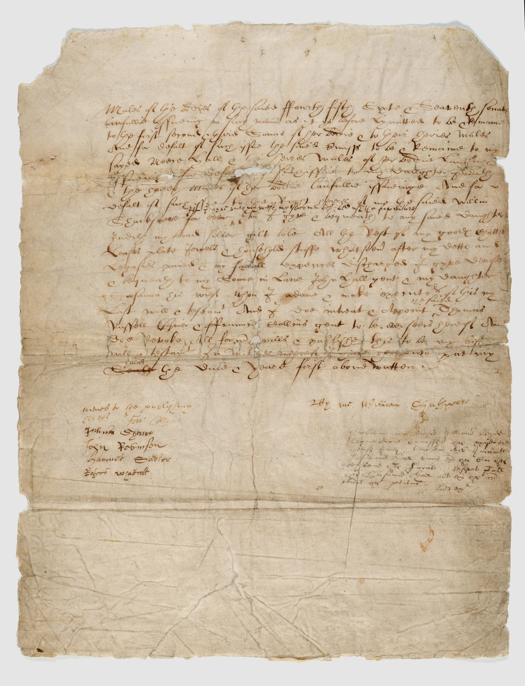
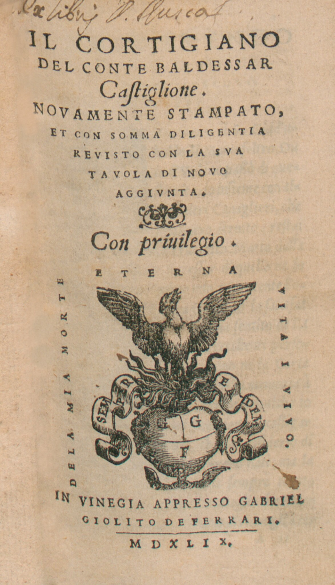

הרקורד ההיסטורי
ההיסטוריון פונה למספר רב של מקורות שכל אחד מהם מספר סיפור שונה ומספק אתגרים משלו:
מסמכים משפטיים, חוזי נישואים וירושות
מסמכים רבים כאלו מתקופתו של שייקספיר שרדו וניתן ללמוד מהם רבות על חוקי החברה בזמנו ועל האופן שבו רכוש נקשר בהסכמי נישואים.
ספרי מוסר
לאורך המאה ה-16 נכתבו ספרי מוסר רבים, לרוב על-ידי אנשי דת, שהציבו (בעיקר בפני נשים) את הנורמות המצופות בענייני אהבה וחיזור. ספק אם אנשים רבים באמת קראו בספרים האלה, אבל עצם קיומם מעיד על הצורך החברתי "לתקן" התנהגות שחותרת תחת מוסכמות חברתיות-דתיות. לכן, ספרי מוסר יכולים ללמד אותנו על המוסכמות החברתיות עצמן ועל העובדה שהיה קושי מסוים לאכוף אותן אל מול מציאות חברתית מורכבת.
מכתבי אהבה
שרדו מהתקופה לא מעט מכתבי אהבה אישיים, במיוחד של בני אצולה, שיכולים בהחלט ללמד אותנו משהו על עולמם הפנימי והרגשי של בני התקופה ולהעיד על כך שבני אדם מאוהבים, אז כמו היום, מתנהגים באופן דומה. למשל, שרדו מכתבי האהבה שהמלכה אליזבת הראשונה החליפה עם אהובה רוברט דאדלי, בהם אליזבת נהגה לצייר זוג עיניים לצד חתימת שמה, כאילו הייתה אומרת, "עיניים שלי".

שלל המקורות האלה, אם הם נקראים יחד, בהחלט יכולים ללמד אותנו הרבה על אהבה וחיזור באנגליה של המאה ה-16. אבל עדיין צריך להיזהר מקביעת עובדות באופן כללי מבלי לקחת בחשבון את המורכבות האנושית שמאפיינת כל חברה, ובמיוחד חברה שנתונה בתמורות גדולות.